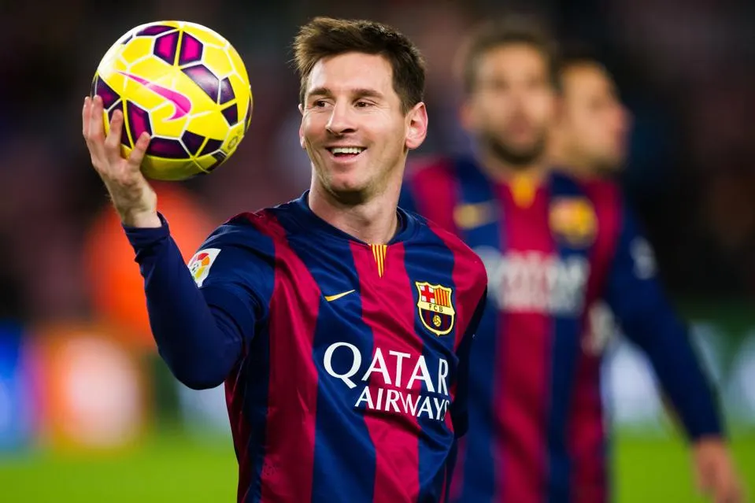

FC Barcelona is a professional football club based in Barcelona, Spain. They play in La Liga, which is the highest football league in Spain. They are one of the world's most decorated clubs, having won 27 La Liga trophies and 5 UEFA Champions League titles. Notable people who have played for FC Barcelona include Lionel Messi, Neymar, and Johan Cruyff. FC Barcelona is famous for their rivalry with Real Madrid, and matches between these two clubs are called "El Clasico."
Lionel Messi is one of the club's most famous players. He has scored 672 goals for Barcelona in 778 appearances. He has won the Ballon d'Or trophy 6 times. Check out Messi's accomplishments here
Recently, Messi also won the World Cup, leading Argentina to its third championship. Learn more about Argentina's victory on ESPN. Here is the moment Argentina won the game: